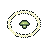
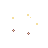
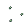

Champignon · 1★

Bramble · 1★
Andromoss · 1★

Duskmantle · 1★
Sprig · 1★

8 frames · 6 FPS · one looping effect per spell. The same artwork is reused for board effects and hidden-board indicators. Preview enlarged 3× for review; the game scales uniformly to fit the board. No activation or ending clips.


